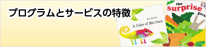
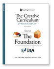

Program プログラム


NEWS 新着情報
- 2024.12.09
- インターナショナルプリスクール 全日制英語幼稚園 クラス見学会のご案内
2025年度入園児募集中の幼稚園クラスの特別見学会を開催します。詳細はキャンペーン情報ページをご覧ください。
- 2024.11.25
- 12月21日（土）クリスマスパーティー開催決定♪
多数のお申込みありがとうございます。定員に達したため、ご予約受付終了しました。次回のイベントもお楽しみに！！
- 2021.02.12
- 全日制英語幼稚園 4月より新規開校！
入園希望者受付中です！
- 2018.11.12
- 早朝･夕方延長あずかり保育開始しました｡
早朝(9:00)･･･夕方(16:00)まで
出迎えサービス開始しました｡
出迎えサービス開始しました｡ ご指定の場所(保育園･幼稚園･他)へスタッフがお迎えに上がります｡
- 2018.09.01
- 国際基準のプリスクール「ファーストラーニング北浦和」オープン！無料体験レッスン開催！
2018年9月18日に「ファーストラーニング北浦和」がオープン致します。M&M（親子クラス）、プリスクール、プリスクールアドバンスの生徒を募集！
詳細はキャンペーンページをご覧ください。
Pick Up! ピックアップ情報

来年2025年4月新幼稚園生になられる､お子様へ
Internartional Preschool Kinder 1 Class（年少児クラス）の特別見学会のご案内です。
- 特別見学会期間：2025年1月9日～31日
- 見学曜日：火曜日～土曜日 (毎日受付いたします｡)
- 見学時間：11:00～11:45
- 対象クラス：Kinder 1 Class (年少クラス) / 授業時間 10:00～14:00 (4時間)
年中・年長クラスへの途中入会ご希望のお子様の見学会もできますので、お気軽にお問い合わせください｡
048-762-3739 (受付時間：月～金10:00～17:30)
MOVIE 動画で知るFLKU
INSTAGRAM Follow Us


考える力、感情表現の豊かさ、自ら問題解決する力、タフネス、そして創造性、こうした新しい時代に必要な能力は、幼児期にたっぷりと遊びの時間をかけることで育まれます。ファーストラーニングでは、子どもの発達段階に応じたプログラムと子どもの興味分野に基づく環境設定、ミュージック&ムーブメント、アート、ドラマチックプレイなどの楽しいアクティビティ（遊び）で、小さなお子様の成長をサポートします。プリスクール（就園準備クラス）、Ｍ＆Ｍクラス（幼児英語教室）、キンダースクール（幼稚園児クラス）の3つのプログラムを通して、創造性や考える力を身につけ、子どもたちの積極的な学習姿勢を育んでいきたいと考えています。

- アメリカン・ラーニングシステム
- 子どもの発達段階に応じたプログラム
- 子どもの興味分野に基づく環境設定
- 専門のティーチャーによる学習サポート
- 幼児教育の情報提供と育児カウンセリング
ファーストラーニングは、幼児教育の専門会社ラーニングネットワークを通して、アメリカ幼児教育界と強いネットワークを結んでいます。
全米で最も高い支持を集めるティーチングノウハウ供給会社「ティーチング・ストラテジィズ」、全米３００万人の子どもたちに親しまれる音楽教材供給会社
 「キンボ・エデュケーショナル」、チャイルドケアの人材育成機関ＣＣＳ（チャイルドケア・ソリューション）などがファーストラーニングを支援しています。
「キンボ・エデュケーショナル」、チャイルドケアの人材育成機関ＣＣＳ（チャイルドケア・ソリューション）などがファーストラーニングを支援しています。
http://www.learningnetwork.co.jp/

 米国ティーチング・ストラテジィズ社による「クリエイティブ・カリキュラム®」は、米国幼児教育界における最も質の高いカリキュラムとして広く普及しています。政府プロジェクトのヘッドスタート、米軍の教育部門、プリスクール、「キンダーケア」「ブライトホライゾンズ・ファミリーソリューション」等の民間のチャイルドケアセンターで、コア・カリキュラムとして適用され、高い評価を得ています。
1. カリキュラムのゴール
- 子どもたちを、積極的かつ創造的に探求し、自分のアイディアを試して考えを明らかにするようなタイプに育てます。
- 子どもたちが自立し、自信をもった好奇心あふれる意欲的な学習者になるのを手助けします。
2. 子どもの興味分野に基づく環境設定（インタレストエリア）
- 子どもの興味分野に基づくアクティビティによって区分けされ、発達段階に適した豊富なマテリアル（玩具・教材）が整った環境をインタレストエリアと呼びます。
- インタレストエリアには、子どもの自立心や意思決定能力を育み、遊びや人との積極的な関わりを促進する効果があります。
3. 子どもへの語りかけ（オープンエンディド・クェスチョン）
- 唯一絶対の正しい答えを求めないオープンエンディド・クェスチョンを行うことで、子どもたちはリスクを冒して何かを言ったり行ったりするようになり、やがてクリエイティブ（創造的）になっていきます。